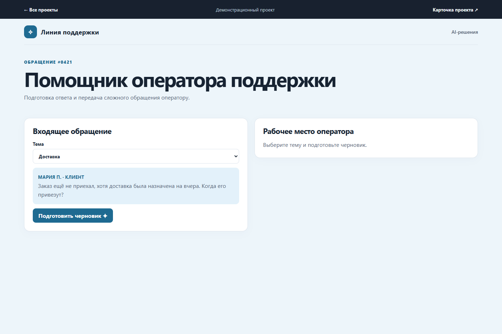

AI-решения / Демонстрационный проект
Помощник оператора поддержки
Оператору нужно быстро подготовить ответ клиенту и передать сложный запрос на проверку.
Что реализовано
Собрал запрос клиента, черновик по категории обращения и передачу истории оператору.
Что показать клиенту
Подготовьте черновик, затем передайте обращение оператору.

Проект работает в браузере на тестовых данных. Сторонний аналог на GitHub ↗
